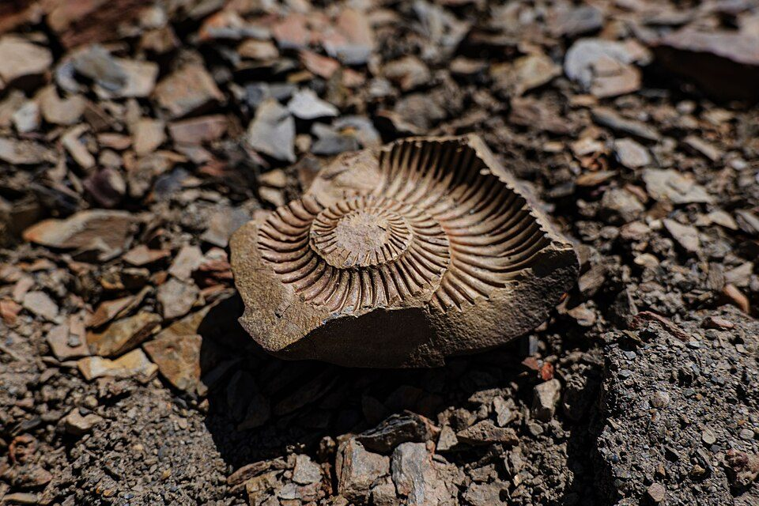

The history of the Earth
From a ball of molten rock to a blue planet full of life: the Earth's 4.54 billion years, told era by era.


The Earth formed about 4.54 billion years ago from the dust and rocks orbiting the young Sun. Geologists divide its history into eons, eras and periods, and read it in rock layers and fossils as if they were the pages of a book. In the Grand Canyon of the Colorado, the river has exposed nearly 2 billion years of history in a 1.8 km wall.
The great stages
| Stage | Million years ago | What happened |
|---|---|---|
| Hadean | 4,540 to 4,000 | A magma planet; a giant impact forms the Moon; the first oceans appear |
| Archean | 4,000 to 2,500 | First continents and first life: bacteria and stromatolites |
| Proterozoic | 2,500 to 539 | Bacteria fill the atmosphere with oxygen; complex cells; the Earth freezes almost entirely |
| Paleozoic | 539 to 252 | Explosion of animal life; plants and animals conquer land; Pangaea forms |
| Mesozoic | 252 to 66 | The age of the dinosaurs; mammals, birds and flowers appear |
| Cenozoic | 66 to today | The age of mammals; ice ages; humans appear |
An oxygen-free hell
At first the Earth was a ball of molten rock pounded by asteroids. One of those collisions, with a Mars-sized planet called Theia, blasted off the material that formed the Moon. When the surface cooled, water vapour condensed into rains that lasted millions of years and filled the oceans. The atmosphere was carbon dioxide and nitrogen: there was no free oxygen.
The Great Oxidation
About 2.4 billion years ago, bacteria called cyanobacteria, which carried out photosynthesis, had released so much oxygen that the atmosphere changed forever. This was the Great Oxidation Event. For many microbes of the time oxygen was poison, and it was perhaps the first great extinction. For us, it was the condition for existing. Iron in the oceans rusted and settled on the seabed, forming the great iron deposits that are mined today.
Snowball Earth
Between 720 and 635 million years ago the Earth probably froze almost completely, with ice reaching close to the equator. It escaped thanks to volcanoes, which kept pouring out carbon dioxide until the planet warmed up.
The explosion of life
About 539 million years ago, in the Cambrian, almost all the major groups of animals appeared in a geologically short time: with shells, eyes and legs. Trilobites were its stars. Then came fish, land plants, amphibians, reptiles and dinosaurs, interrupted by several mass extinctions.


History in a year
To get a sense of proportion, imagine the Earth's history squeezed into a single year:
Videos to understand it better
- A Brief History of Geologic TimePBS Eons · 4.8M views
Videos are from YouTube and belong to their creators. They only load when you click them. See all videos →